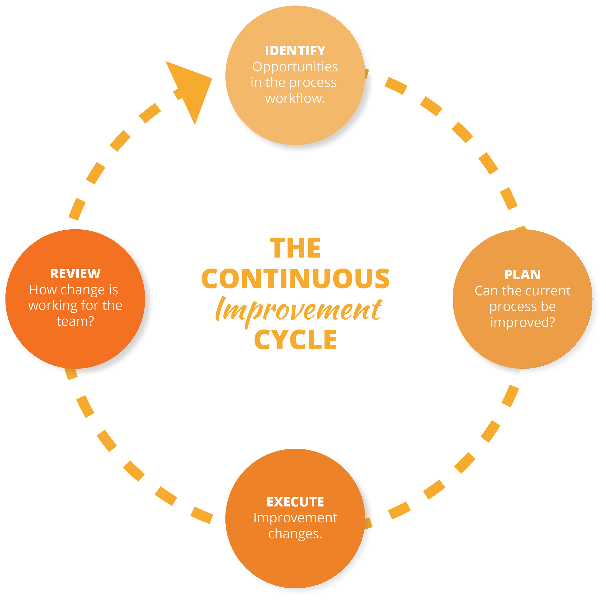

Lühendatult BDD, on tarkvaraarenduse meetod, mis on välja arenenud testimisel põhinevast arendusest.
Käitumisel põhinev arendus kombineerib testimisel põhineva arenduse üldiseid tehnikaid ja põhimõtted.
Selle eesmärk on pakkuda arendustiimile ja juhtivtiimile jagatud tööriista tarkvara arendamisel.
Disainipõhine arendus kasutab disaini, kui protsessi osa, et õppida ja paremini määratleda nõudeid ja luua paremaid ja teadlikumaid tehnoloogilisi lahendusi.
Seda võib vaadelda ka kui protsessi, mille käigus disain ja kasutajakogemus juhivad toote või tarkvararakenduse väljatöötamist.
See toob kaasa tooteid, mida inimesed naudivad ja tahavad teistele rääkida.
Domeenipõhise disaini määratlemiseks peaksime kõigepealt kindlaks tegema, mida me selles kontekstis (ja arengus üldiselt) domeeni all mõtleme.
Domeeni ühine sõnastiku määratlus on: "teadmiste või tegevuste sfäär."
Teisisõnu, rakenduste arendamise ajal on domeen " teadmiste ja tegevuse sfäär, mille ümber rakenduse loogika keerleb.”
SBD tarkvaraarenduses, tähendab, et tarkvara tooted ja võimalused on kavandatud olema turvalised.
Testimisel põhinev arendus on tarkvaraarenduse meetod, kus testid kirjutatakse enne tarkvara.
Arendusprotsess koosneb lühikestest iteratsioonidest, kus esmalt kirjutatakse ebaõnnestuv test ning seejärel minimaalne kood, et see test läbi läheks.
Selline arendus tagab olukorra, kus kogu kood on alati testitud. Sellisel viisil kirjutatud koodi on kergem refaktoreerida ning testid aitavad ka programmi eeldatavat käitumist dokumenteerida.
Testimisel põhinevat arendust rakendatakse ka olemasoleva koodi täiustamisel ja silumisel.
(ATDD) hõlmab erinevate vaatenurkadega meeskonnaliikmeid (klient, arendus, testimine),
kes teevad koostööd vastuvõtutestide kirjutamiseks enne vastava funktsionaalsuse rakendamist.
Vastuvõtukatse genereerimiseks tekkivaid koostööarutelusid nimetatakse sageli kolmeks amigoks,
mis esindavad kliendi kolme vaatenurka (millist probleemi me proovime lahendada?), arendus (kuidas saaksime selle probleemi lahendada?) ja testimine (kuidas oleks...).
(CT) on tarkvaraarenduse protsess, kus rakendusi testitakse pidevalt kogu tarkvaraarenduse elutsükli (SDLC) vältel.
CT eesmärk on hinnata tarkvara kvaliteeti kogu SDLC-s, pakkudes kriitilist tagasisidet varem ning võimaldades kvaliteetsemaid ja kiiremaid tarneid.

(SBE) on koostööl põhinev lähenemine tarkvaratoodete nõuete ja ettevõtlusele suunatud funktsionaalsete testidele,
mis põhineb nõuete hõivamisel ja illustreerimisel, kasutades abstraktsete väidete asemel realistlikke näiteid.
Andmepõhine programmeerimine on stiil, milles programmi avaldused kirjeldavad sobitatavaid andmeid ja vajalikku töötlemist,
selle asemel, et määratleda võetavate sammude jada. Andmepõhiste keelte standardnäited on tekstitöötluskeeled sed ja AWK,
neid tuntakse ka kui reale orienteeritud keeli-ja mustrite sobitamine toimub peamiselt regulatsiooni või reanumbrite kaudu.
Andmetele orienteeritud disain on see, et see seisneb teie andmete korraldamises tõhusaks töötlemiseks.
Eriti seoses vahemälu puudustega jne. Andmepõhine disain on seevastu see, kui lasta andmetel kontrollida teie programmi käitumist.